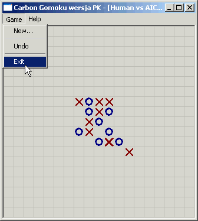
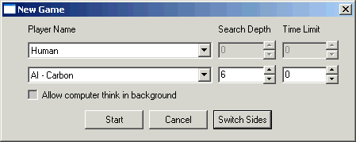

| Game->New | Wyœwietla okienko dialogowe NewGame, w którym ustawia siê parametry nowej gry. |
| Game->Undo | Umo¿liwia cofniêcie jednego ruchu. Jest aktywne tylko, gdy cofniêcie jest mo¿liwe. |
| Game->Exit | Koñczy program. |
| Help->About | Wyœwietla informacjê o programie. |

